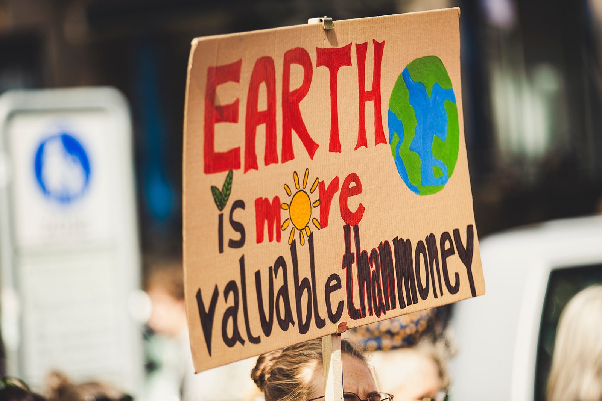

Climate Activism in the Digital Age.
Like seeds in fertile soil, young activists worldwide are planting the roots of a global movement against climate change. Their voices, amplified by the vast expanse of social media platforms, resonate like thunder across the digital landscape. United by a common cause, they are a symphony of determination, harmonizing their messages like a chorus of birds heralding a new dawn.
In the digital realm, where the proverbial pen is indeed mightier than the sword, these climate crusaders craft messages that cut through the noise of apathy. Their posts are not just words on a screen but seeds of awareness sown in the minds of millions. Through vivid storytelling and compelling imagery, they paint a canvas of environmental urgency, stirring the consciousness of even the most indifferent.
Technology, a double-edged sword, becomes their ally. With the finesse of master storytellers, they wield hashtags like beacons, guiding the way for others to join the cause. Each share, like a ripple in a pond, extends their reach, creating a wave of awareness that crashes against the shores of ignorance.
These activists "speak out" against the environmental injustices of our time. They "call for" accountability, urging governments and corporations to take responsibility for their ecological footprints. Armed with information and determination, they "stand up to" the giants of industry, demanding sustainable practices and environmental stewardship.
Their activism is not confined to the digital realm; it spills onto the streets in grassroots movements that gather momentum like a rolling stone. The youth, once deemed silent, now roar like lions in the face of climate adversity. They "take to the streets," their footsteps echoing the urgency of their message.
In the tapestry of their collective action, a proverbial village is raised, a global community of activists bound by a common purpose. As the digital age connects hearts and minds, these young crusaders embody the proverb: "It takes a village to raise a child," with the child being the planet itself.